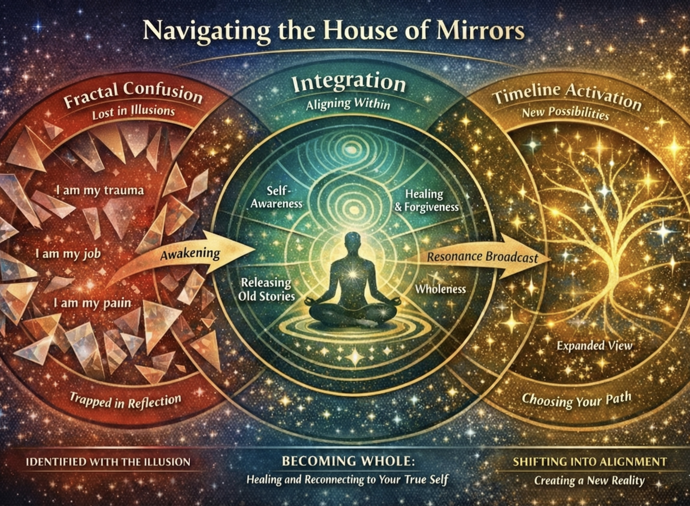
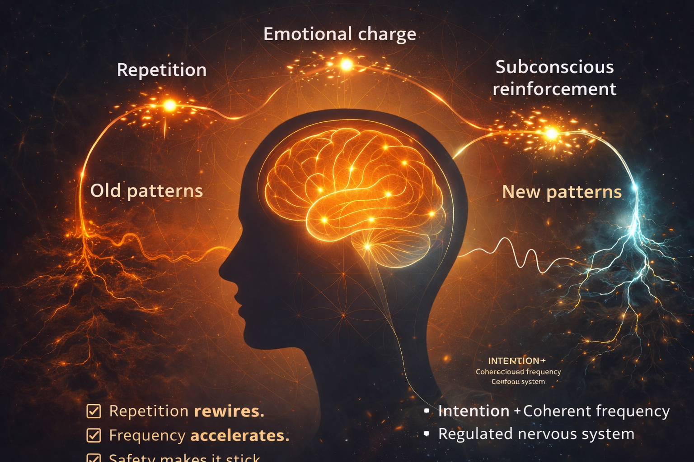
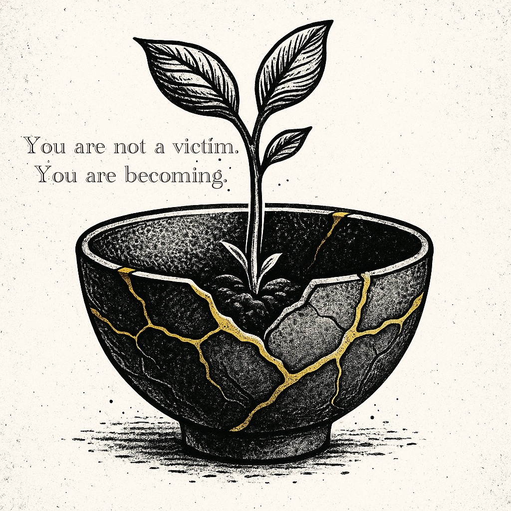

Identity · Pattern Work
Who Are You Showing Up As Today?
The Lover. The Rebel. The Healer. The Sage. These aren't just characters in myths — they're universal energies that live within you. Archetypes are ancient blueprints of being.

Created by Kristina Rose Taylor. Practical tools, meaningful books, and systems that help you understand your patterns and come back to yourself.
Each day has its own quality of energy. Check in here for a grounding reflection, an affirmation, and a note on what the current season is asking of you.
We move through the final degrees of Pisces — the last sign, the veil between worlds. This is the season of dissolution and recollection, where boundaries thin and what has been unspoken finally rises. The Piscean field carries the memory of all twelve signs before it. It is not a time for building, but for listening. For releasing what the last cycle asked you to carry so long.


Tools, frameworks, and projects built at the intersection of pattern work, natural cycles, and personal healing.
Honest writing about the work — what's being built, what's being learned, and what keeps showing up.
The Lover. The Rebel. The Healer. The Sage. These aren't just characters in myths — they're universal energies that live within you. Archetypes are ancient blueprints of being.

I keep getting the same message: get control of your environment. At first that sounded like "fix everything out there." But I think it's actually something quieter, and way more powerful.

Every thought, reaction, or emotion travels a neural pathway — and the more you repeat it, the stronger it gets. That's how synapses form. But the good news is: repetition rewires.

Seriously. It sounds small, but it's powerful. Humming increases nitric oxide by up to 15x, activates the vagus nerve, and shifts your brainwaves from stress into calm.

It's about becoming aligned with what you truly want beneath the surface. For most of my life, the deepest desire I carried was to be a mother. Life didn't hand me that dream easily.

Most people are taught to fight their bodies. But transformation does not happen through war. It happens through compassion. Without compassion for the body, you will be conformed by it instead of transformed through it.
Answer 8 questions and receive a clear picture of your core patterns — what's recurring in your body, your relationships, and your family history — and one practical shift to help you move through it.
This is not therapy. It's a structured reflection tool.
This takes 20–40 seconds. The system is mapping your patterns.
This reflection is educational and symbolic in nature and is not medical, psychological, or legal advice.
Where physics, neuroscience, and ancient tradition converge. This is not a set of claims — it is a map of where the threads meet.
The nervous system processes reality through two simultaneous streams. Tap each stream to activate it. Activate both to see what coherence looks like.
Tap a stream above to activate it.